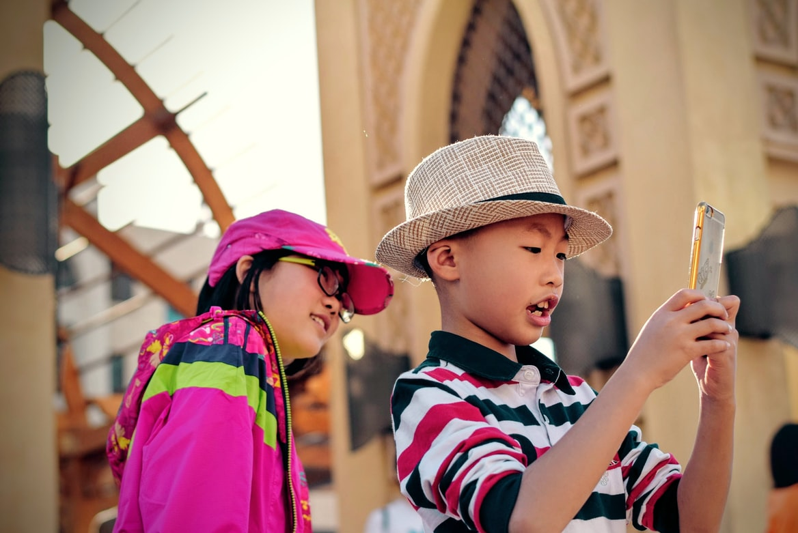

Should children under 16 be allowed to use social media?
- 2 young children using a mobile device. Credit: Unsplash
By Hamza Elafifi
Published: Dec. 7, 2021
Whats so bad with social media?
Can excessive social media use lead to suicide, insecurity, and mental illnesses? Social media is supposed to be an engaging platform that is used to share, view, and distribute all forms and variety of content. Social media can also be used to connect with family, friends, and with new people as well, creating new friendships and relationships but in many cases, social media is not as cheerful as it may seem.
Many problems can arise from children and young teens using social media. Problems ranging from cyberbullying, viewing prohibited content, doing illegal challenges, can significantly damage children who are still developing and maturing (Sample). Social media should not be used by children under 16 due to the lasting and impactful effects that the actions of others’ online presence can have on them. Studies have also found that there has been a lot of connected evidence between suicide-related thoughts and actions with excessive social media use within the ages of 10-19 (Wikipedia).
So why is this happening?
Why would excessive social media use lead to all these issues? Social media has everyone wanting to be viewed as perfect and loved by everyone. Many would lie about their lives, and edit their appearance, just to appear to be something they are not. It sparks this false dilemma inside the person that makes them believe that they are something that they are not. Social media is also a huge hub of cyber-bullying. Cyberbullying is when people you know or may not, on the internet, try to harm you through many ways such as hurting your feelings, lying about you to others, and exploiting your weaknesses.
Since we have access to social media 24/7, cyberbullying can be an ongoing challenge for someone all the time. Cyberbullying is a huge cause of depression and anxiety, mental illnesses that are exceedingly difficult to overcome (Tsang). These mental illnesses would only get worse if the victim is not helped. They can be led first towards self-harm, which is a way that the victims cope with the pain. It would only get worse when suicide-related thoughts start to form. If the person is not helped in time, they could commit suicide and the number of online-related deaths would only get worse.
So who should be using it?
Social media should be permissible for use by mature young adults and older, who know how to use the platform correctly. Allowing children to use these platforms opens many doors to many unfavorable outcomes such as stated before. Children do not primarily think ahead with their decisions and can lead themselves to issues with these decisions.
While I was in Grade. 7, I was sending hurtful messages to others and believed that everyone perceived them in a friendly and humorous way. One of the people who were sent these messages by me were very hurt and started to grow a sort of self-hate towards themselves, posting content hinting towards suicidal thoughts and threatening to commit suicide. I was very devastated by my actions and had seen what had occurred from them. I spoke with this person and fixed the issue in a way so both of us would not be harmed. This experience taught me to think twice about what to do on social media, a platform where you are exposed, and everyone can see what you post, interpreting it all in their separate ways. I started noticing a change in the actions of teenagers on social media at the age of around 16-17, where they started to be more mature and careful with what they share with the public, showing a change in decision making that betters their chances to avoid conflict from actions that they perceived as meaningless,
Social media is a great online platform that can be used to do a lot of good in the world and within the people if the right people use it. Having children use the platform while not understanding the impact anyone's actions on these platforms can have on themselves is not a great decision. Social media companies today do have the minimum age for use of their platforms set at the age of 13, but when I view what these children are posting and sharing, it shows that that decision could have been better. Changing the minimum age of use for these platforms would only benefit these children and protect them from harmful things such as the mental illnesses stated. So, what do you think? Should social media platforms revise their decisions for the permissible age of use of their platforms? Would you let your kid use social media at the age of 13?